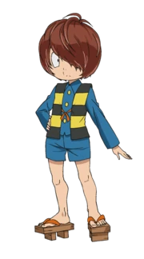
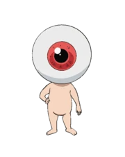
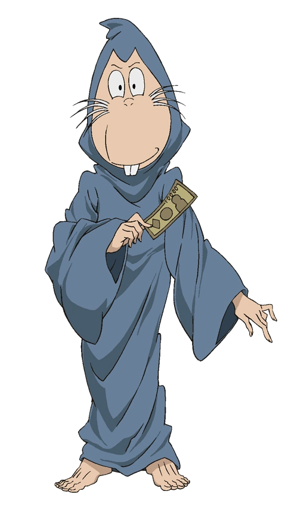

GeGeGe no Kitarō
Es una serie manga japonesa creada en 1959 por el mangaka Shigeru Mizuki. Su trama trata sobre folclore, y lo que se destaca son criaturas conocidas como yōkai, una clase de espíritu monstruo a los que todos los personajes principales pertenecen. Se ha adaptado a la pantalla en varias ocasiones, tanto en anime como en videojuegos.
Sountrack
Personajes
Kitaro
鬼太郎
chico yōkai nacido en un cementerio, y aparte de su padre putrefacto, el último miembro viviente de la Tribu Fantasma (幽霊族 yūrei zoku). Kitaro carece de ojo izquierdo, pero su pelo suele cubrirle el hueco vacío. Lucha por la paz entre humanos y yōkai.
Medama-oyaji
目玉のおやじ / Padre Globo Ocular
padre de Kitaro. Cuando era adulto, murió de una enfermedad, solo renació de su cuerpo putrefacto como una versión antropomórfica de su propio globo ocular. Es pequeño y frágil, pero tiene un espíritu fuerte y un gran amor por su hijo. Es un gran conocedor sobre todo tipo de fantasmas. Le gusta permanecer limpio, y se baña a menudo en un tazón pequeño.
Nezumi Otoko
ねずみ男 / Hombre Rata
roedor mestizo entre humano y yokai. Tiene trescientos años, y en todo ese tiempo jamás se ha bañado, está sucio, huele mal, y está lleno de llagas. Aunque por lo general es amigo de Kitaro, Nezumi Otoko no desperdiciará el tiempo en preparar malvados planes o traicionar a sus compañeros si cree que hay dinero de por medio o un enemigo poderoso a su lado. Afirma estar graduado en la universidad de University of the Bizarre (怪奇大学 Kaiki Daigaku).
Neko Musume
猫娘 / Chica Gato
yokai pacífica, que se transforma en un terrible gato monstruoso con colmillos y ojos felinos cuando está enfadada o quiere comer pescado. Como es de esperar, no se lleva bien con Nezumi Otoko. Ella siente un leve flechazo por Kitaro, pero este la ve solo como una buena amiga. Tiene cierta semejanza con el bakeneko del Folclore japonés.